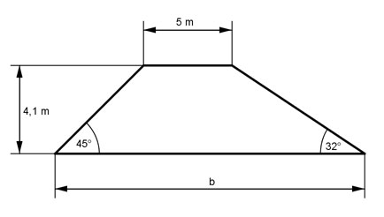
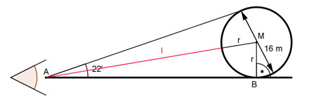
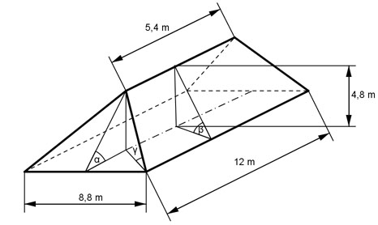
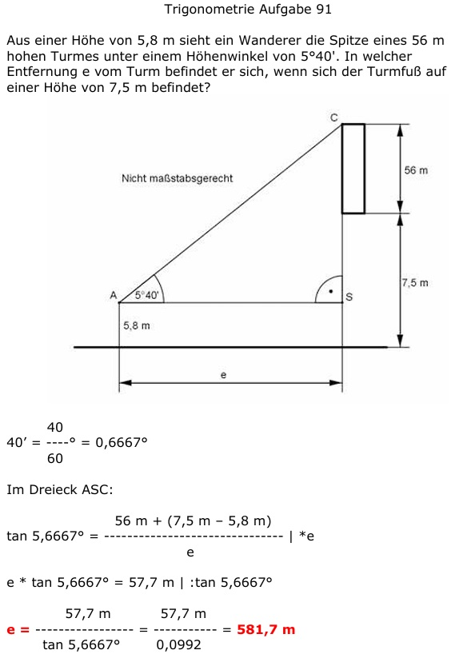
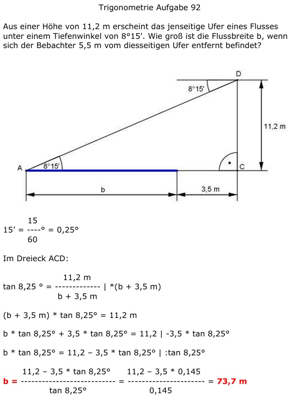
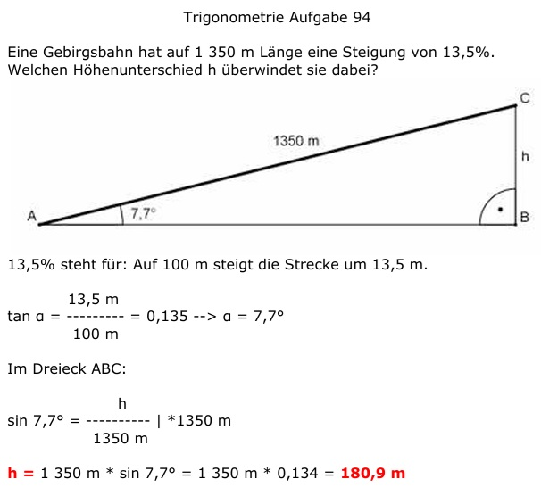

Aufgabe 70
Wie groß ist die Kraft K, mit der der Wagen vorwärts bewegt wird?
 K = N
K = N
Wie löse ich Matheaufgaben?
Trigonometrie
Aufgabe 64 Wie hoch ist ein Baum, dessen Spitze aus einer Entfernung von 24,7 m unter einem Winkel von 35° anvisiert wird. h = m
Aufgabe 65 Welchen Anstellwinkel hat eine 6 m lange Leiter, deren Fußpunkt 1,5 m von der Wand entfernt ist?
Aufgabe 66 Ein Ballon befindet sich in einer Höhe von 129 m. Von dort wird ein Haus unter einem Winkel von 15° anvisiert. Wie weit ist das Haus entfernt? Entfernung = m
Aufgabe 67 Welche Breite b hat der Deich? Wie groß ist seine Fläche A? Welches Volumen V hat ein Deich von 100 m Länge? 
Aufgabe 68 Der Turm ist 47 m hoch und steht schief. Er weicht um 5,5° von der Senkrechten ab. Wie groß ist der Abstand a an der Spitze? a = m
Aufgabe 69 Der Brennerpass hat eine Steigung von 12%. Wie groß ist der durchschnittliche Steigungswinkel α?
Aufgabe 70 Wie groß ist die Kraft K, mit der der Wagen vorwärts bewegt wird?
Aufgabe 71 2 Arbeiter, die eine Kraft von je 600 N aufbringen können, sollen einKlavier mit einer Gewichtskraft von 2 500 N über eine Rampe auf einen Lkw rollen, dessen Ladefläche 1,15 m hoch ist. Unter welchem Winkel α muss die Rampe angelegt werden? Welche Länge l in cm muss sie haben?
Aufgabe 72 Ein Drachen hängt an einer 43,5 m langen Schnur. Die Schnur bildet einen Winkel von 51° zum Boden. In welcher Höhe h befindet sich der Drachen? h = m
Aufgabe 73 Ein Grundstück hat die Form einer Raute, mit einer Seitenlänge a = 16,4 m und einem Winkel α = 52°. Wie groß sind die beiden Diagonalen e und f?

Aufgabe 74 Wie hoch reicht und wie lang ist eine Stehleiter, die eine Stützweite von 3,2 m und einen Öffnungswinkel von 26° hat? h = m
Aufgabe 75 Ein rechteckiger Spielplatz ist 7,7 m lang und 5 m breit. Wie lang ist seine Diagonale d und der Winkel α zwischen der Diagonale und seiner Länge?
Aufgabe 76 Zwei Türme liegen 3,8 km auseinander. Ein Flugzeug befindet sich genau über dem einen und peilt von dort den anderen unter einem Winkel von 23° an. In welcher Höhe h fliegt es? h = km
Aufgabe 77 Ein Mann ist 1,85 m groß und wirft einen Schatten von 3,1 m. Unter welchem Winkel α steht die Sonne?
Aufgabe 78 Wie hoch ist das Haus?
Es sind m
Aufgabe 79 Um wieviel cm wird der Mittelpunkt des Pendels angehoben?

Aufgabe 80 Grundstück soll entlang der roten Linie unter 2 Anliegern aufgeteilt werden. Wie lang ist die Teilungslinie t, und wie groß ist die Fläche A des Grundstücks?
t = m
Aufgabe 81 Die Grundfläche eines kegelförmiger Kelches hat einen Umfang von 35,2 cm. Seine Höhe beträgt 14,3 cm. Wie groß ist der Winkel α an der Spitze des Kelches?
Aufgabe 82 Ein Beobachter sieht auf Augenhöhe einen Ballon unter einem Sehwinkel von 22'. Wie weit ist er entfernt?  m
Aufgabe 83 Ein Beobachter (Augenhöhe 1,5 m) sieht unter einem Winkel von 52' auf einem Kirchturm eine Kugel, die sich in einer Höhe von 24 m befindet. Er selbst ist 18 m von der Turmmitte entfernt. Wie groß ist der Durchmesser d der Kugel?

Aufgabe 84 Ein Haus hat ein Satteldach mit einer Breite von 9,6 m und Sparren mit einer Länge von 7,8 m, die 0,3 m überstehen. Wie groß ist der Neigungswinkel α der Sparren und die Höhe h des Daches? h = m
Aufgabe 85 Ein symmetrischer Deich ist oben 4,5 m breit. Die Böschungen sind jeweils 5,6 m lang und von oben nach unten unter 38° geneigt. Wie breit ist der Deich unten?
Aufgabe 86 Ein Baum wirft einen Schatten von 27,5 m, wobei die Sonnenstrahlen unter einem Winkel von 38° 50' einfallen. Wie hoch ist der Baum? Er ist m hoch.
Aufgabe 87 Wie groß ist die Höhe h?

Aufgabe 88 Wie groß ist der Erhebungswinkel α?
α = °
Aufgabe 89 Wie hoch liegt A über B, wenn auf einer Karte 1 : 25 000 der Abstand AB = 18 mm beträgt?
Aufgabe 90 Wie groß sind die Neigungswinkel α und β der Dachflächen des Walmdaches und der Neigungswinkel γ der Grate?  h = cm
Aufgabe 91 Wie groß sind g1 und g2 von dem gleichschenkligen Trapez? 
Aufgabe 92 Berechnen Sie die Höhe h, die Diagonale d und die Seite a des gleichschenkligen Trapezes.  d = cm
Aufgabe 93 Ein Trapez mit einer Mittellinie von 6 cm und einer Höhe von 4 cm soll einem gleichseitigen Dreieck flächengleich sein. Berechnen Sie die Länge a einer Dreieckseite und das Verhältnis der beiden Höhen.
Aufgabe 94 Berechnen Sie die Länge der Grundseite g₁ und der Seite b.  b = cm
Aufgabe 95 Ein gleichschenkliges Dreieck ist 12 cm hoch. Es soll durch parallel verlaufende Teilstriche in 3 gleich große Flächen unterteilt werden. In welchen Höhen verlaufen die Teilstriche?
Aufgabe 96 Ein Rechteck ist 4 cm breit und 13 cm lang. Es soll so zerteilt werden, dass zwei Trapeze entstehen, deren Grundseiten 4 cm und 9 cm lang sind. Wie lang ist die Schnittlinie l? l = cm
Aufgabe 97 Von einem gleichschenkligen Trapez sei die eine parallele Seite zweimal und die andere dreimal so groß wie der Schenkel mit 3 cm. Wie groß sind der Umfang U und die Fläche A des Trapezes?